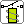
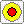

Lampe
LampeAusgangsbauteile zeigen das Ergebnis der Schaltung. Sie haben einen oder mehrere Eingänge links, an die Sie die Drähte aus der Verarbeitung anschließen.
Ein Ausgangsbauteil hat kein eigenes −: Es ist unsichtbar mit Masse verbunden. Siehe Wo sind Plus und Minus? Stehen Versorgungsschienen auf dem Panel, stecken Sie die Ausgänge links an eine − Schiene (Masse).
LampeLeuchtet, solange der Eingang ein ist.

RelaisEin Relais ist ein Schalter, der von einem Elektromagneten betätigt wird. Links befindet sich der Eingang R zur Spule, rechts der Wechselkontakt mit den Anschlüssen R1 (oben) und R2 (unten).
Das Relais zeigt so, wie ein kleines Steuersignal einen Kontakt umschaltet. R1 und R2 sind nur Beschriftungen am Symbol: Sie können dort keinen Draht anschließen.

SummerErtönt, solange der Eingang ein ist. Praktisch als Alarm.
Die Anzeige hat einen Eingang. Was sie zeigt, hängt davon ab, was Sie anschließen:
Das Voltmeter zeigt die Spannung an seinem +, gemessen gegen Masse, zum Beispiel 3,3 V. Schließen Sie einen Draht an das + links an, oder setzen Sie das Messgerät zwischen eine + Schiene und eine − Schiene. Siehe Versorgung & Voltmeter.